|
惡靈古堡３-----其他補充
|
|
服裝的變更 這裡要先說明，電腦版和 PS 版是不一樣的，電腦版的服裝一開始就可以取得更換，加上身上原先的 那一套，總共有八套； PS 版必須先破關一次後才能拿到服飾店鑰匙（會放在道具箱），服裝加上身 上的共有六套，以 HEAVY MODE 模式Ｓ級破關方可取得所有衣服，而以 LIGHT MODE 模式則最多 取得三套（包括原先）。 服飾店位於Jack酒吧的隔壁（初見Brad的地方），用服飾店鑰匙開啟。 |
||
|
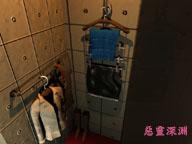 最初的服裝。 |
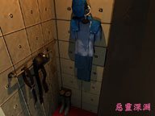 以任一模式Ｄ級破關後取得，是 女主角Jill在S.T.A.R.S.的制服。 |
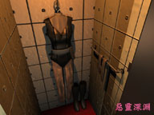 以任一模式Ｃ級破關後取得，是 恐龍危機女主角蕾吉娜的服裝。 |
|
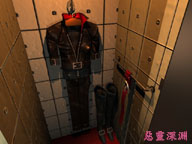 機車騎士裝，以HEAVY模式Ｂ級 破關後取得。 |
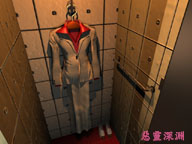 迪斯可裝，以HEAVY模式Ａ級破 關後取得。 |
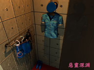 女警制服，以HEAVY模式Ｓ級破 關後取得。 |
|
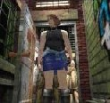 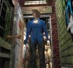 |
||
| 當初由PS移植到DC時新增的兩套衣服。 | ||
|
生命的存量 |
||
| Fine
Caution Caution Danger Poison Virus |
生命力 60
%以上
生命力 30 ~ 60 % 生命力 15 ~ 30 % 生命力 15 %以下 中毒狀態 T-virus病毒侵入體內 |
移動速度正常
移動速度下降一成 移動速動下降一成 移動速度下降五成 每過一秒生命力下降 0.5 %，不過不會死亡。 等待救援 |
|
藥草的調和 |
||
| 綠色藥草 |
 |
生命力回復 25 % |
| 藍色藥草 |
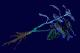 |
解毒 |
| 紅色藥草 | 不可單獨使用 | |
| 綠色+綠色 |
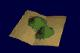 |
生命力回復 50 % |
| 綠色+綠色+綠色 |
 |
生命力回復 100 % |
| 綠色+紅色 |
 |
生命力回復 100 % |
| 綠色+藍色 |
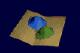 |
生命力回復 25 %＋解毒 |
| 綠色+綠色+藍色 |
 |
生命力回復 50 %＋解毒 |
| 綠色+紅色+藍色 | 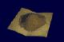 |
生命力回復 100 %＋解毒 |
|
藥粉的調和 彈藥粉主要由Ａ、Ｂ兩種組合成各種不同的彈藥粉，近而調和出各種彈藥，如果調配彈藥（製出彈 藥）的經驗達八次以上，相同的彈藥粉卻可以調出強化的彈藥，並且經驗越豐富調出來的彈藥越多， 遊戲中彈藥粉出現也是隨機決定，雖然有固定出現點，卻不會每次都出現。合成後的藥粉需要用器具 才可以調出彈藥，這個器具一開始就帶在身上，另外，彈藥粉還可以不經過器具與硫彈結合，調和出 其他彈藥。 彈藥粉Ａ 彈藥粉Ｂ 彈藥粉Ｃ 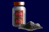 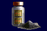 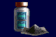 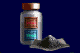 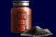 彈藥粉ＢＢＢ彈藥粉ＣＣＣ 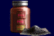 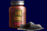 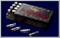 Ａ＝手槍子彈 or 手槍強化彈 Ａ＋Ａ＝ＡＡ＝手槍子彈 or 手槍強化彈 ＡＡ＋Ａ＝ＡＡＡ＝手槍子彈 or 手槍強化彈 Ｂ＝散彈 or 散彈強化彈 Ｂ＋Ｂ＝ＢＢ＝散彈 or 散彈強化彈 ＢＢ＋Ｂ＝ＢＢＢ＝散彈 or 散彈強化彈 ＢＢ＋Ａ＝ＡＢＢ＝手槍子彈 or 手槍強化彈 ＡＡ＋Ｂ＝ＡＡＢ＝散彈 or 散彈強化彈 Ａ＋Ｂ＝Ｃ＝榴彈 10發 Ａ＋Ｃ＝ＡＣ＝火炎彈 Ｂ＋Ｃ＝ＢＣ＝硫酸彈 Ｃ＋Ｃ＝ＣＣ＝冷凍彈 ＣＣ＋Ｃ＝ＣＣＣ＝軍用手槍子彈 Ａ＋榴彈＝火炎彈 Ｂ＋榴彈＝硫酸彈 Ｃ＋榴彈＝冷凍彈 ＡＡ＋榴彈＝火炎彈 ＢＢ＋榴彈＝硫酸彈 ＣＣ＋榴彈＝冷凍彈 ＡＡＡ＋榴彈＝火炎彈 ＢＢＢ＋榴彈＝硫酸彈 ＣＣＣ＋榴彈＝冷凍彈
追跡者的獎勵 遊戲中追跡者將會出現好幾次，其中七次可以將其打倒並依序取得道具，道具會遺留在追跡者被打 倒的地上。 追跡者出現地點：１. 警察署大門門口（要選擇與之對決或time over） ２. 警署內取得鐵絲後一樓通往二樓的樓梯口 ３. 餐廳或報社（在先去的地方出現） ４. 市政大樓ㄚ字通道 ５. 由藥品公司出來時消防水管處 ６. 時鐘之塔燈台（只有選擇用電擊才行） ７. 時鐘之塔禮拜堂前（第二型態） 取得道具：第一次──EAGLE 6.0組件A 第二次──EAGLE 6.0組件B 第三次──急救噴霧保存盒 第四次──M37組件A 第五次──M37組件B 第六次──急救噴霧保存盒(含三瓶急救噴霧) 第七次──M4A1衝鋒步槍 or 無限彈（只有第一輪可以取得衝鋒步槍）
追跡者的火箭筒 在遊戲中有不少遇到追跡者的機會，其中部分的追跡者擁有火箭筒，對玩家造成威脅。其實火箭筒 是可以催毀的，追跡者的火箭筒只有 4~7 發的彈藥，當他用完了彈藥想要補充時，火箭筒會自動爆 炸。只要引誘他發射再適當的閃躲，很快就可以摧毀他的火箭筒。
給進階玩家的攻略補充 1.一開始在倉庫出來時的殭屍都不打的話，在城郊逛了一圈再從上鎖的門回來，會看到Dario女兒 Lucia逃跑的畫面，不過後來還是在倉庫前面的門被一隻殭屍咬死了 2.在酒店遇到Brad的時候，馬上往回頭開門或者往前前進，Jill跟Brad的對話會有些許的不同。襲擊 Brad的那隻殭屍，在Jill的血只剩致命一擊時是不會被那隻殭屍咬死的（正要咬的時候就被推開）。 3.在收集讓火車開動的三樣物品時，只要隨便拿一樣火車開動的物品，回火車那邊，就會看Mikhail對 抗僵屍的劇情。 4.在火車遇難的時候，選擇逃出窗外時，會在有圖書室遇到Carlos，那時候兩人都用武器指者對方， 要是沒拿武器，Jill反而會嚇到並往後退。 6.在Carlos回來時遇到第二型態追跡者，可以操縱Carlos把追跡者打到在地上爬不起來，第二型態追跡 者有沒有被Carlos打躺，回去跟Jill的對話也會有些許不同。 7.在傭兵模式中，有個場景不是有兩隻追跡者嗎？只要讓他們的火箭筒轟到對方，他們兩個就會搞廝 殺，剩一隻的時候再把他解決就OK啦。 感謝網友＂伊比＂提供 |
等級的評定
| Ｓ級 | Ａ級 | Ｂ級 | Ｃ級 | D級 | E級 |
| 270~300分 | 230~269分 | 180~229分 | 120~179分 | 50~119分 | 0~49分 |
| 1. 主角生命力為 200 ，如果恢復的 HP 在 1500 以下得 100
分，每多恢復 200 分數下降 10 分。
2. 色帶使用次數為０次得 100 分，用一次扣 10 分，用二次扣 20 分，用三次扣 30分，用四、五次扣 40 分，用六∼八次扣 50 分，用九∼十二次扣 60 分，用十三∼十七次扣 70 分，用十八∼二十三 次扣 80 分，用二十四∼三十次扣 90分，超過三十次０分。 3. 破關時間不足2:29:59得 100 分，2:30:00 ∼ 2:39:59，2:40:00 ∼ 2:59:59，3:00:00 ∼ 3:39:59，3:30:00 ∼ 4:09:59，4:10:00 ∼ 4:59:59，5:00:00 ∼ 5:59:59，6:00:00 ∼ 7:09:59，7:10:00 ∼ 8:29:59，8:30:00 ∼ 9:59:59照以上順序每一階段多扣 10分，超過 10:00:00則０分。 |
惡靈深淵Biohazard Abyss http://98.to/coolbio

 散彈強化彈
散彈強化彈